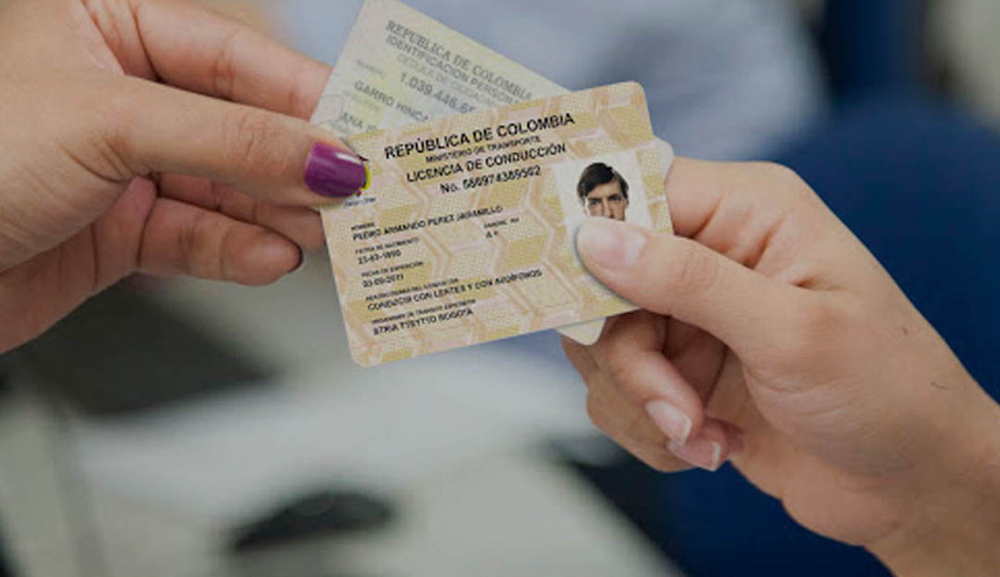

Licencias de Conducción para Emprendedores y Trabajadores
El programa Licencias de Conducción Gratuitas para Emprendedores y Trabajadores es una iniciativa de la Alcaldía Local de Tunjuelito que busca fortalecer la movilidad y productividad de los negocios locales. A través de esta convocatoria, se otorgarán 100 licencias de conducción gratuitas a emprendedores, trabajadores y vendedores informales que requieran desplazarse para el desarrollo de sus actividades económicas.
Tipos de Licencias Disponibles
Los beneficiarios podrán acceder a una de las siguientes categorías de licencias:
- A2: Para motocicletas o mototriciclos con cilindraje superior a 125 cc.
- C1: Para automóviles, camperos, camionetas y microbuses de servicio público y particular.
- C2: Para camiones, buses y busetas de servicio público y particular.
Fechas de la Convocatoria
- Inicio de inscripciones: 5 de febrero de 2024.
- Cierre de inscripciones: 10 de febrero de 2024.
Es importante destacar que esta convocatoria ya ha finalizado. Sin embargo, se recomienda estar atento a futuras oportunidades similares que pueda ofrecer la Alcaldía Local de Tunjuelito.
Requisitos para Postularse
Los interesados deben cumplir con los siguientes requisitos:
- Fotocopia del documento de identidad.
- Certificado de residencia o pertenencia en la localidad de Tunjuelito.
- Fotocopia del recibo de servicio público del lugar donde opera el emprendimiento (no aplica para vendedores informales).
- Registro en la Cámara de Comercio (si aplica).
- Carta de intención manifestando el interés en participar en el programa.
- Registro fotográfico de la unidad productiva con cuatro fotos que evidencien su funcionamiento y la nomenclatura del lugar.
- Constancia firmada de no estar inscrito en otros proyectos del Fondo de Desarrollo Local de Tunjuelito.
- Referencia comercial de un proveedor que indique la fecha de inicio de la relación comercial y el monto promedio de compra.
- Registro Individual de Vendedores Informales (RIVI), si aplica.
- Certificado del SIMIT no mayor a 30 días que indique estar a paz y salvo por multas e infracciones de tránsito.
Proceso de Inscripción
Los interesados debían completar el formulario de inscripción disponible en el siguiente enlace:
Formulario de InscripciónAdemás, podían acercarse a las instalaciones de la Alcaldía Local de Tunjuelito, ubicadas en la Diagonal 50A #18-48 Sur, Barrio San Carlos, para obtener más información y asesoría.
Objetivo del Programa
Esta iniciativa tiene como propósito principal fortalecer el tejido empresarial local y mejorar la logística de los negocios mediante la capacitación y otorgamiento de licencias de conducción. Al facilitar la movilidad de emprendedores y trabajadores, se busca impulsar la economía de la localidad y generar nuevas oportunidades laborales.